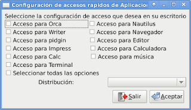

Actualización del programa Desarrollo de interfaz gráfica para la configuración de accesos rápidos del teclado
Publicado el dom 08 agosto 2010 en Tutorial Python • 1 min de lectura
En el artículo anterior se explico la mejora del script que permite cambiar las configuraciones de las teclas rápidas en gnome, ahora se explicará la mejora del programa mencionado en este artículo.
La captura de pantalla de la imagen muestra con respecto al artículo anterior un combobox que está deshabilitado en este momento, dicho combobox permitirá elegir entre 3 distribuciones Debian, Ubuntu o Canaima.
La imagen se muestra en la siguiente figura:

La idea es la posibilidad de configurar los accesos rápidos de todas las aplicaciones mostradas o sólo las que se quiera.
def on_button2_clicked(self,*args):
#Se crea el objeto config de la clase Conf
Config = configGconf.Conf()
#Se crea un ciclo con la lista de las aplicaciones.
for aplicacion in self.__aplicaciones:
#Se modifica las aplicaciones una por una pasando la aplicación.
Config.modificar_opcion(aplicacion,1)
El código completo del programa lo puedes bajar pyconfig-accessgnome-ui.py la interfaz gráfica elaborada en glade se puede bajar de pyconfig-accessgnome.glade.
En el siguiente artículo se explicará como crear el paquete python.
===
¡Haz tu donativo! Si te gustó el artículo puedes realizar un donativo con Bitcoin (BTC) usando la billetera digital de tu preferencia a la siguiente dirección: 17MtNybhdkA9GV3UNS6BTwPcuhjXoPrSzV
O Escaneando el código QR desde billetera: